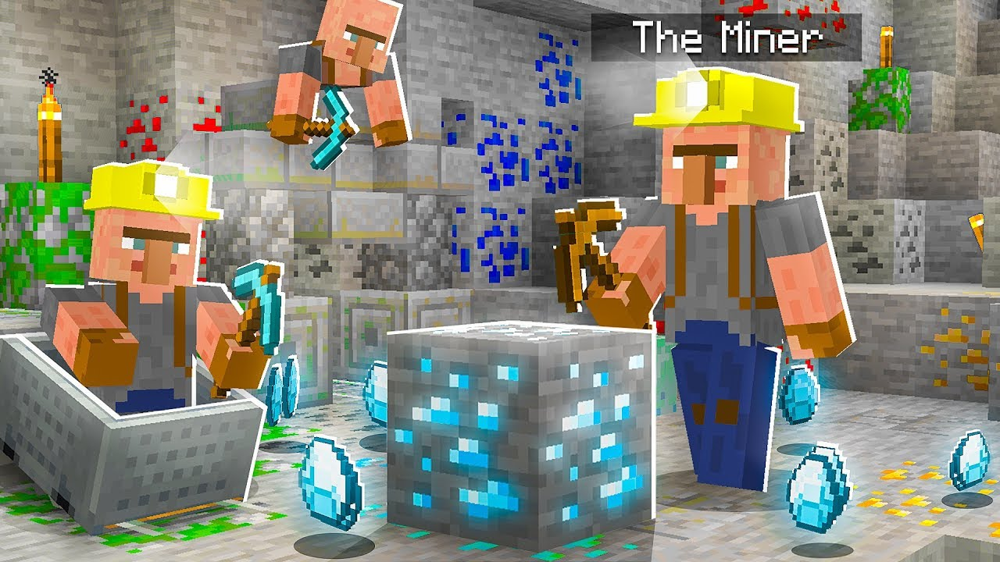
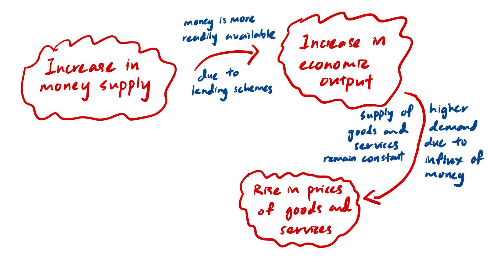

Modern Money
Humans spend money on a daily basis, be it for shopping, basic necessities, or even for the occasional getaway trip out of town. Money comes in many forms - a metal coin, a piece of paper or even a string of code electronically mined by a computer. But what gives money its value? Who defines and control the value and supply of money? Does it really have any intrinsic value? To understand this, let’s dive right into the history of modern money.
The History of Modern Money
In the olden days of traditional monetary policy, the supply of money within an economy was fixed. Back then, money was in the form of precious metals, and the only way to get money is the work for it (literally mine the precious metals) or sell something valuable in exchange for it.

This leads to a proportional relationship between the value of money and economic goods and services - as economic output increases, the value of money increases.
Eventually, it was decided that using heavy precious metals as a store of wealth/means of economic activity is far too inconvenient. Banks started existing and took care of the precious metals for you, in exchange for a piece of paper, which is universally known as fiat money.
Slowly, the general population got accustomed to the use of fiat paper money in their daily lives. Since fiat currency were societally accepted, virtually nobody returned to the banks to redeem their precious metals (hereon refered to as “gold”). The banks, responsible for storing gold for people safely, came up with an idea of lending these gold out, while profitting from a set interest rate. Here’s the catch: the gold being lent out into the economy were already in circulation given that they were initially stored in the banks in exchange for fiat money. Money was pretty much being created in the economy of thin air!
This ultimately lead to more money being pumped into circulation, which lead to an increase in the supply of money, an increase in economic output and an increase in the price of goods and services. Due to the supply of money not being constant anymore, the value of money essentially becomes diluted.
 | Figure depicting the impacts of an increase in money supply. |
Of course, with an increase of demand towards goods and services (due to more money in circulation), their prices will naturally increase too. This gives people a false impression that they are getting richer as the prices of their assets are increasing in value, but in fact, what is really happening is inflation. At some point, borrowing became expensive, and people in debt rely on their savings to pay back the loans they owe the banks. Some people would have to default on their assets, causing them to be liquidated, which ultimately leads to a recession. This is all the result of lending out money already in circulation, which is known today as fractional reserve banking.
Fractional Reserve Banking
Fractional reserve banking is defined as follows:
A banking system in which only a fraction of bank deposits are backed by actual cash on hand and available for withdrawal.
The word “fractional” refers to the fraction of deposits held in reserves. For example, if a bank has £100 million in assets, it may be required (by law) to hold £10 million (i.e 10%).
This type of banking system is an accepted business practice worldwide, but it has both pros and cons. For one, permitting the bank to lend out funds that would be otherwise unused allows them to generate returns, as well as to stimulate economic growth by injecting more capital into the system. However, imagine a scenario where everyone goes to the bank to withdraw their money - yeah, this spells disaster, especially when only a fraction of the deposits are held in reserves. Bank runs has historically happened due to incidents like the big stock market crash of 1929.
| Figure showing a scenario of a bank run - horrifying. |
The Central Bank
To counteract the potential bank runs that may occur due to fractional reserve banking, Central Banks was born. Just like how a bank lends money to individuals, Central Banks serve to lend out money to normal (commercial) banks in the event withdrawals exceed the amount they hold in reserves. This causes the risk of bank runs to be transferred to the Central Bank. By definition:
A Central Bank is a financial institution given privileged control over the production and distribution of money and credit for a nation or a group of nations.
Central Banks are tasked with controlling and manipulating the national money supply. This is done primarily by:
- Setting interest rates on loans and bonds. This allows interest rates to be raised to slow growth and avoid inflation (discouraging excessive borrowing), or lowered to encourage growth (encouraging borrowing).
- Regulating the reserve requirements of banks. Figuring out the optimal reserve requirements for a bank to both maximise economic growth and minimise the risk of overwithdrawals are handled by Central Banks.
- Act as an emergency lender to distressed commercial banks and other institutions. This has lead to the term Too Big to Fail.
The Central Bank of the US, also known as the Federal Reserve, can be said to be the Central Bank for all other Central Banks in the world due to their monopoly on gold. Feel free to read more about how this happened here: How the US Government seized all citizens’ gold in 1930s.
In the mid to late 19s, the monetary system where a country’s currency or paper money has a value directly linked to gold (also known as the Gold Standard) has been abandoned. This standard has now been replaced by fiat money, which essentially is monetary policy describing that a currency is to be used because of a government’s order, and must be accepted as a means of payment. Isn’t it absurd that the only thing backing the piece of paper cash in our wallets, is simply the government’s incontrovertible order that it has value? But there are reasons for this:
- Under the gold standard, the supply of gold cannot keep pace with its demand. This leads to inflexibility under dire economic times, unlike for fiat money, where bailouts can happen merely with the help of the Central Bank.
- The gold standard encourages the mining of gold, which creates negative environmental externalities.
The Age of Fiat Money
Since the invention of the Central Bank, we’ve seen hyperinflation happen globally, especially during the recent years when the pandemic struck us. Money was pumped into circulation to promote economic growth, and to aid people who lost their jobs/businesses due to the pandemic. However, this also creates false wealth effects, and economic bubbles tend to occur due to money flowing into things not because of it being increasingly attractive or valuable, but due to inflation caused by an increase in the money supply. Such bubbles prey on the uneducated and unaware, as its human nature to succumb to the fear of missing out.
This would inevitably lead to more severe crashes, especially when people default on their debts. Debt burden becomes more cumbersome and painful for individuals, but the government can’t increase the money supply forever just to keep the economy and people afloat. There has to be a balance, which the government are struggling to find in the midst of the black swan known as COVID-19. The peak of the pandemic has left us, but the effects of inflation are now starting to permeate into our economy, leaving many individuals to fend for themselves hopelessly.
Many economic pundits are criticising the handling of the economy via the current monetary policy, which lead to the proposal of CBDCs.
Conclusion
Just like all things in life, nothing is flawless, and it is likely that no monetary policy ever will be perfect. There is a trade-off when it comes to everything. I hope this blog post serves as a useful reference when it comes to modern money.
*Note that this blog post may not be entirely correct, I am no economic expert, these are all based off of my reading and research.